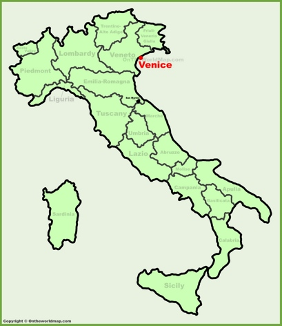
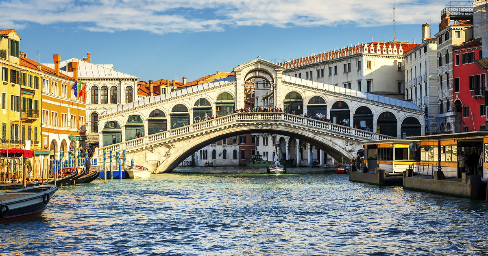
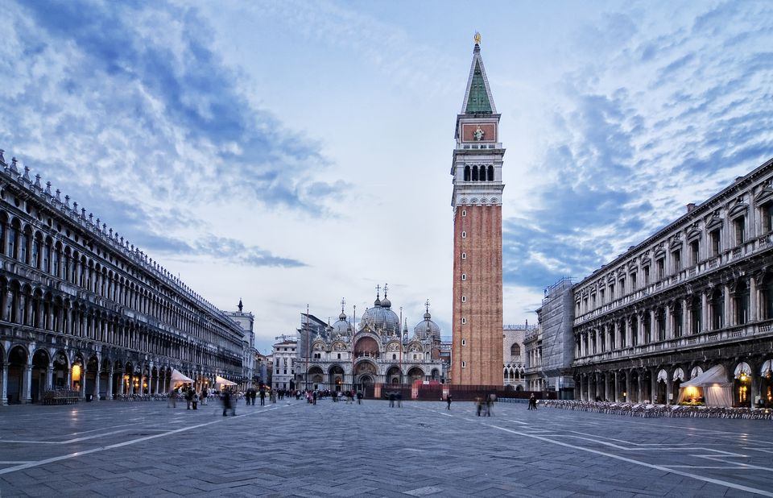

Venice is located in northeastern Italy and is the capital of Italys Veneto region. The city is built on more than 100 small islands in a lagoon in the Adriatic Sea. Since the city has no roads, boats, gondolas and walking are the methods of transportation in this georgeous city.
The top tourist attractions in Venice:
GRAND CANAL

The Grand Canal travels through the city of Venice in a large S shape, measuring about 3,800 meters long. The canal is an ancient waterway lined with beautiful historic buildings that were mostly built between the thirteenth to eighteenth centuries. Being a center for trade in the olden times, it is the traffic route for the city, with boats and gondolas cruising on it all the time.
Check this link to see location of the Grand Canal in Venice.
RIALTO BRIDGE
The Rialto Bridge is one of the most visited and photographed bridges in Venice, used to cross the Grand Canal. It remained the only way to cross the canal by foot until the Accademia Bridge, built in 1854. The current structure was built in only three years, between 1588 and 1591. The large arc of the bridge allows large boats to pass under it, and its three walkways provide space for visitors to cross the Grand Canal.
Check this link to see location of the Rialto Bridge in Venice.
ST. MARKS SQUARE
The St. Marks Square is the heart of Venice and is the largest square in the city. It has always been the location of important government buildings and other facilities in Venice. There are several beautiful museums and attractions in the square, the most popular ones being Doges Palace and St. Marks Basilica.
Check this link to see location of St. Marks Square in Venice.
Visit this page to know about hotel accomodations in the city of Venice.
Visit this page to know about the best restaurants in Venice.